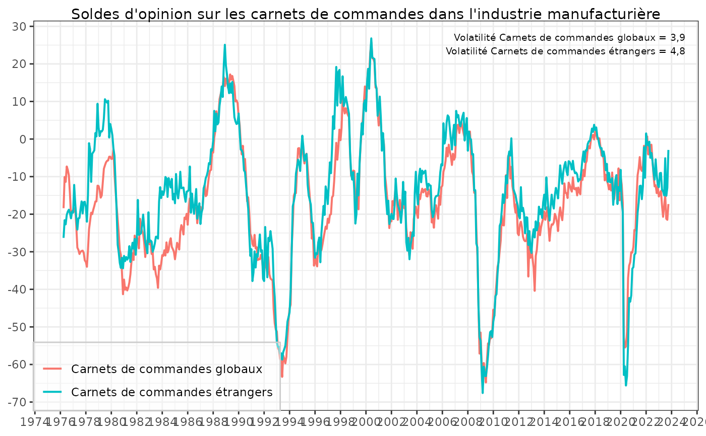
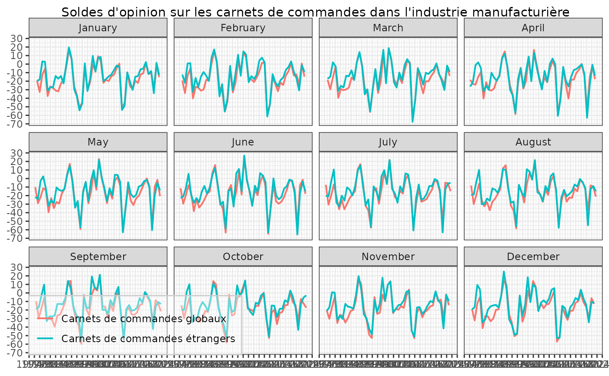

Graphique d'une série temporelle
graph_ts.RdFonction qui permet de faire des graphiques de séries temporelles à partir d'un objet de type ts.
Arguments
- data
un objet de type
tscontenant une ou plusieurs séries à grapher.- titre
titre du graphique (par défaut pas de titre).
- sous_titre
sous-titre du graphique (par défaut pas de sous-titre).
- legende
légende du graphique. Par défaut le nom des variables dans l'objet
dataen entrée. S'il n'y a qu'une série à tracer alors aucune légende n'est affichée.- afficheVolatilite
booléen indiquant si l'on souhaite afficher la volatilité des séries graphées (c'est-à-dire l'écart-type de leur variation). Par défaut
afficheVolatilite = FALSE: on n'affiche rien.- cex
nombre indiquant le montant par lequel le texte associé à la volatilité doit être mis à l'échelle par rapport à la valeur par défaut. Par défaut
cex = 0.6: le texte est donc 60 % plus petit que la valeur par défaut. Par exemple, pour des séries trimestrielles cela permet d'avoir un graphique par trimestre traçant chacun les valeurs associées à son trimestre.- diviserParPeriode
diviser le graphique en fonction de la période : il y aura en sortie autant de graphiques que de périodes dans la série de départ.
- x_lab
titre axe des abscisses (par défaut aucun titre).
- x_lab_month
boolean indiquant si on veut que les x_labels soit formatés avec le moois
- y_lab
titre axe des ordonnées (par défaut "Date").
- outDec
séparateur décimal utilisé pour dans la légende des axes (par défaut la virgule).
- n_xlabel
nombre de labels pour l'axe des abscisses (par défaut une année sur deux).
- n_ylabel
nombre de labels pour l'axe des ordonnées (par défaut 12).
- prec_plot
graphique à ajouter avant le geom_line
- size
taille des points.
Valeur de retour
Un graphique ggplot.
Exemples
data <- lectureBDM("001585942","001585980")
legende <- c("Carnets de commandes globaux","Carnets de commandes étrangers")
titre <- "Soldes d'opinion sur les carnets de commandes dans l'industrie manufacturière"
graph_ts(data, titre = titre, legende = legende, afficheVolatilite = TRUE)

graph_ts(data, titre = titre, legende = legende, diviserParPeriode = TRUE)
